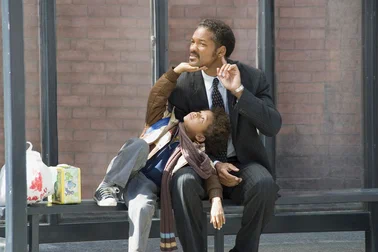
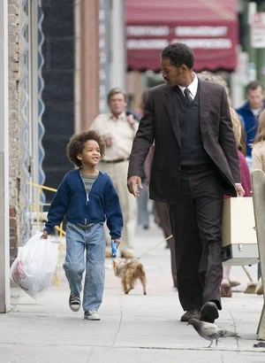

"Счастье" — это не глагол", — объясняет в начале фильма Крис Гарнер (Смит) сынишке. Но до финальных титров ему придется ежесекундно опровергать это высказывание, поскольку окажется, что счастье — это непрерывное действие.
Не секрет, что Америка сдвинута на культе счастья. Известны два пути его достижения. Первый — выдумать что-нибудь этакое, хулахуп или кубик Рубика. Второй путь сложнее. О том и кино. Для темнокожего коммивояжера-неудачника, как и для 99% человечества, быть счастливым значит заработать достаточно денег, чтобы содержать семью. На пути к этой цели ему придется постоянно двигаться против течения и проявлять несгибаемую силу воли.
Несчастного Криса, вложившего все деньги в рентгеновские аппараты, которые не покупает ни одна клиника, достают кредиторы, арестовывают за неуплату парковочных штрафов, от него уходит жена, его выселяют из квартиры. Но однажды у здания биржи он встретит счастливца на роскошной машине. "Что вы делаете и как вы это делаете?" — спрашивает застывший от восторга Крис. "Я работаю брокером", — отвечает тот.
Сюжетной основой фильма послужила биография человека, разбогатевшего на биржевых спекуляциях в период Великой депрессии. Правда, здесь действие перенесено в 1981 год, во времена социального упадка, спровоцированного "рейганомикой". Конечно, данный "рецепт счастья" подходит не всем: отец-одиночка Крис Гарнер живет с бомжами, спит в общественном туалете и при этом полгода учится на курсах брокеров, зная, что из 20 стажеров на работу возьмут одного.
Санденсовский лауреат Габриэль Муччино для англоязычного дебюта выбрал реалистичный стиль повествования, где по мере приближения к мечте жизнь героев меняется лишь к худшему. И не ошибся: хладнокровно смотреть на их мучения совершенно невозможно (не в последнюю очередь благодаря актерам: Уилл Смит здесь еще более негламурный, чем в "Али"). Легче поверить, что счастье — безальтернативный способ выживания, а хеппи-энд — единственно возможный финал.